Abstract
Semantic watermarks exhibit strong robustness against conventional image-space attacks. In this work, we show that such robustness does not survive under micro-geometric perturbations: spatial displacements can remove watermarks by breaking the phase alignment. Motivated by this observation, we introduce MarkCleaner, a watermark removal framework that avoids semantic drift caused by regeneration-based watermark removal.
Specifically, MarkCleaner is trained with micro-geometry-perturbed supervision, which encourages the model to separate semantic content from strict spatial alignment and enables robust reconstruction under subtle geometric displacements. The framework adopts a mask-guided encoder that learns explicit spatial representations and a 2D Gaussian Splatting–based decoder that explicitly parameterizes geometric perturbations while preserving semantic content. Extensive experiments demonstrate that MarkCleaner achieves superior performance in both watermark removal effectiveness and visual fidelity, while enabling efficient real-time inference.
Preliminary Analysis
We identify that semantic watermarks are fundamentally sensitive to geometric perturbation. Geometric transformations manifest as phase shifts in the frequency domain, which disrupt the precise phase alignment used by watermark detectors.
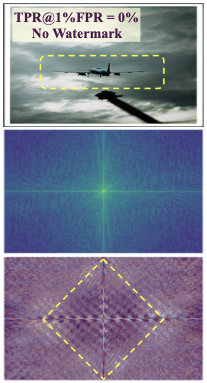
(a) Clean
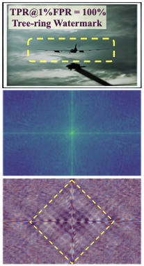
(b) Watermarked
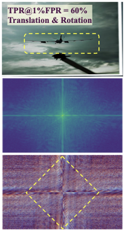
(c) Transformed
Geometric transformation disrupts watermark-induced phase ripples while preserving amplitude structure, indicating watermark invalidation arises from phase modulation rather than content alteration.
Methodology
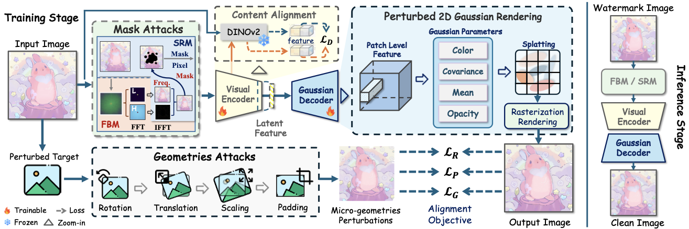
MarkCleaner adopts a UNet-based encoder-decoder architecture. The core principle is to train the network to learn micro-geometric perturbations while maintaining visual consistency.
- Mask-Guided Encoding: Disrupts potential watermark patterns in both frequency and spatial domains using dual-domain stochastic masking.
- 2D Gaussian Splatting (2DGS) Decoder: Explicitly parameterizes geometric perturbations using 2D Gaussian primitives to break spatial alignment while preserving content.
- Content Alignment: Incorporates self-supervised visual features (DINOv2) to ensure semantic consistency under spatial displacement.
Quantitative Comparison
We evaluate MarkCleaner against 14 representative watermark removal approaches across 12 watermarking schemes. Results are shown as TPR@1%FPR / ACC. Lower values indicate more effective removal.
| Attack Type | DwtDct | SSL | Stega | Stable | VINE | WOFA | Gaussian | T2S | Tree | RingID | HSTR | HSQR | mTPR(↓) |
|---|---|---|---|---|---|---|---|---|---|---|---|---|---|
| Stamp | Sign. | Shading | Mark | Ring | mACC(↓) | ||||||||
| None | .800/.888 | 1.0/1.0 | 1.0/.999 | 1.0/.993 | 1.0/.999 | .977/.832 | 1.0/1.0 | 1.0/1.0 | .943/.970 | 1.0/1.0 | 1.0/1.0 | 1.0/1.0 | .977/.473 |
| JPEG | .003/.490 | .243/.680 | 1.0/.997 | .782/.695 | 1.0/.989 | .040/.458 | 1.0/1.0 | 1.0/.998 | .083/.945 | 1.0/1.0 | .980/.988 | 1.0/1.0 | .678/.353 |
| Crop&Scale | .007/.521 | .927/.875 | .033/.554 | .999/.978 | .013/.505 | .800/.631 | .003/.501 | .000/.501 | .000/.842 | .010/.582 | .070/.597 | .153/.702 | .251/.154 |
| Blur | .357/.682 | .987/.981 | 1.0/1.0 | .818/.817 | 1.0/.998 | .693/.707 | 1.0/1.0 | 1.0/1.0 | .593/.965 | 1.0/1.0 | 1.0/1.0 | 1.0/1.0 | .871/.429 |
| Noise | .000/.505 | .010/.508 | .987/.872 | .000/.543 | 1.0/.901 | .069/.439 | 1.0/.991 | .987/.951 | .000/.925 | .993/1.0 | .103/.578 | .987/.990 | .511/.267 |
| Rotation | .000/.522 | .973/.918 | .000/.510 | .998/.813 | .010/.497 | .987/.845 | .007/.539 | .000/.499 | .000/.850 | 1.0/1.0 | .103/.578 | .060/.613 | .251/.154 |
| Translation | .003/.501 | .980/.923 | .255/.587 | 1.0/.991 | .013/.504 | .822/.963 | .027/.568 | .000/.501 | .000/.888 | .013/.484 | .087/.585 | .057/.563 | .271/.172 |
| VAE-B (ICLR, '18) | .000/.499 | .760/.818 | 1.0/.999 | .730/.680 | 1.0/.990 | .157/.439 | 1.0/1.0 | 1.0/1.0 | .190/.957 | 1.0/1.0 | 1.0/1.0 | 1.0/1.0 | .686/.365 |
| VAE-C (CVPR, '20) | .000/.496 | .410/.720 | 1.0/.998 | .582/.652 | .997/.959 | .173/.440 | 1.0/1.0 | 1.0/1.0 | .123/.947 | 1.0/1.0 | .990/.993 | 1.0/1.0 | .606/.351 |
| DA (ICLR, '24) | .000/.494 | .003/.510 | .043/.531 | .625/.463 | .450/.609 | .477/.479 | 1.0/.987 | .993/.939 | .000/.880 | .927/.996 | .800/.828 | 1.0/.998 | .526/.226 |
| CtrlRegen+ ('25) | .003/.494 | .030/.557 | .197/.603 | .023/.479 | .833/.671 | .110/.416 | 1.0/.999 | 1.0/.987 | .001/.885 | .980/.999 | .437/.890 | 1.0/.998 | .468/.248 |
| UnMarker ('25) | .010/.538 | .973/.918 | .990/.946 | .999/.981 | .007/.502 | .997/.917 | 1.0/1.0 | .017/.502 | .010/.948 | .460/.939 | .097/.693 | .033/.575 | .466/.288 |
| IRA (CVPR, '25) | .000/.487 | .680/.759 | .990/.905 | .625/.508 | 1.0/.924 | .100/.418 | 1.0/1.0 | 1.0/1.0 | .800/.975 | 1.0/1.0 | .990/.995 | 1.0/1.0 | .682/.331 |
| NFPA (NeurIPS, '25) | .000/.500 | .030/.565 | .013/.481 | .043/.494 | .013/.502 | .087/.387 | .003/.514 | .000/.499 | .003/.913 | .030/.672 | .153/.645 | .367/.795 | .061/.154 |
| Ours | .003/.500 | .000/.504 | .010/.488 | .000/.446 | .063/.554 | .002/.494 | .003/.554 | .003/.500 | .001/.795 | .003/.802 | .051/.630 | .022/.766 | .014/.094 |
As demonstrated in the comprehensive evaluations above, MarkCleaner consistently achieves the best overall performance across all metrics and watermark types.
Qualitative Results
Traditional pixel-space distortions severely degrade visual quality, while generation-based methods tend to remove watermarks at the cost of semantic drift. Our MarkCleaner achieves more effective watermark suppression with better visual fidelity.
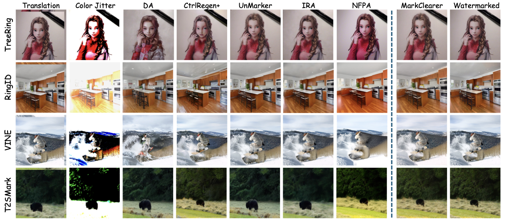
Comparison across different removal strategies. MarkCleaner preserves fine details without semantic drift.
Additional Results (Appendix)
We provide additional qualitative comparisons on various semantic watermarking schemes, including Tree-Ring, RingID, HSTR, and HSQR.
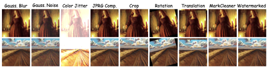
Tree-Ring Watermark Removal (A)
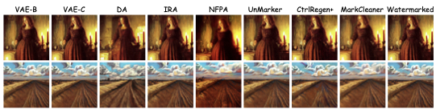
Tree-Ring Watermark Removal (B)
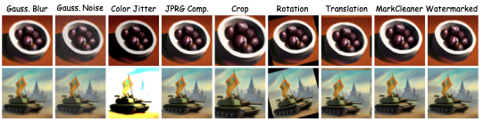
RingID Watermark Removal (A)
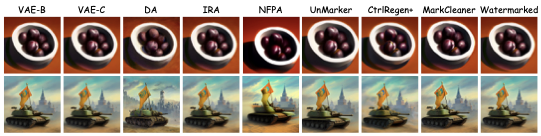
RingID Watermark Removal (B)
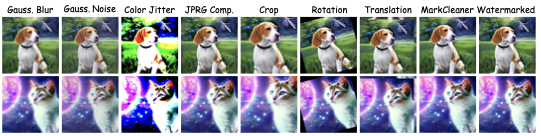
HSTR Watermark Removal (A)
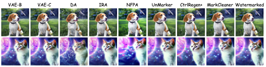
HSTR Watermark Removal (B)
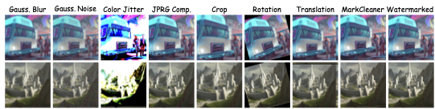
HSQR Watermark Removal (A)
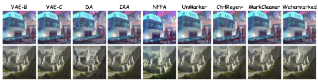
HSQR Watermark Removal (B)
Ablation Study
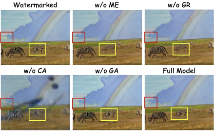
Visualization of ablation studies. Red boxes highlight geometric subtle shifts, while Yellow boxes highlight structural preservation.
We analyze the contribution of each component: Mask-Guided Encoder (ME), Gaussian Rendering (GR), Content Alignment (CA), and Geometric Attacks (GA).
| Module | TPR(↓) | FID(↓) | CLIP(↑) | LPIPS(↓) |
|---|---|---|---|---|
| w/o ME | 0.2467 | 145.145 | 0.3154 | 0.6846 |
| w/o GR | 0.1367 | 146.604 | 0.3163 | 0.6837 |
| w/o CA | 0.1567 | 149.416 | 0.2528 | 0.7064 |
| w/o GA | 1.0000 | 131.487 | 0.3324 | 0.6676 |
| Full Model | 0.0001 | 133.196 | 0.3705 | 0.6295 |
BibTeX
@misc{kong2026markcleanerhighfidelitywatermarkremoval,
title={MarkCleaner: High-Fidelity Watermark Removal via Imperceptible Micro-Geometric Perturbation},
author={Xiaoxi Kong and Jieyu Yuan and Pengdi Chen and Yuanlin Zhang and Chongyi Li and Bin Li},
year={2026},
eprint={2602.01513},
archivePrefix={arXiv},
primaryClass={eess.IV},
url={https://arxiv.org/abs/2602.01513}
}